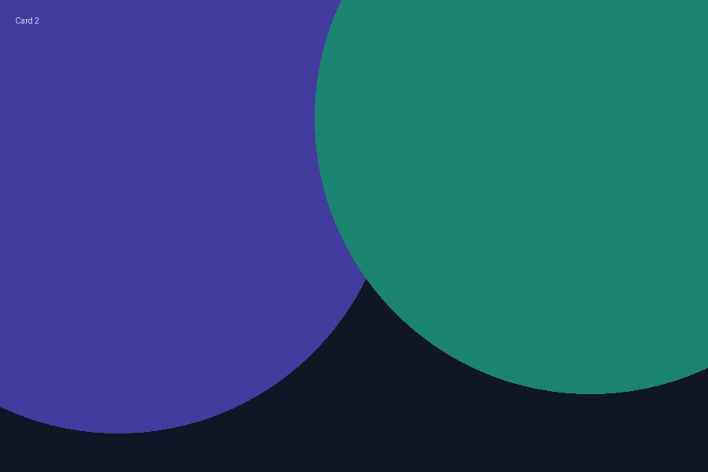
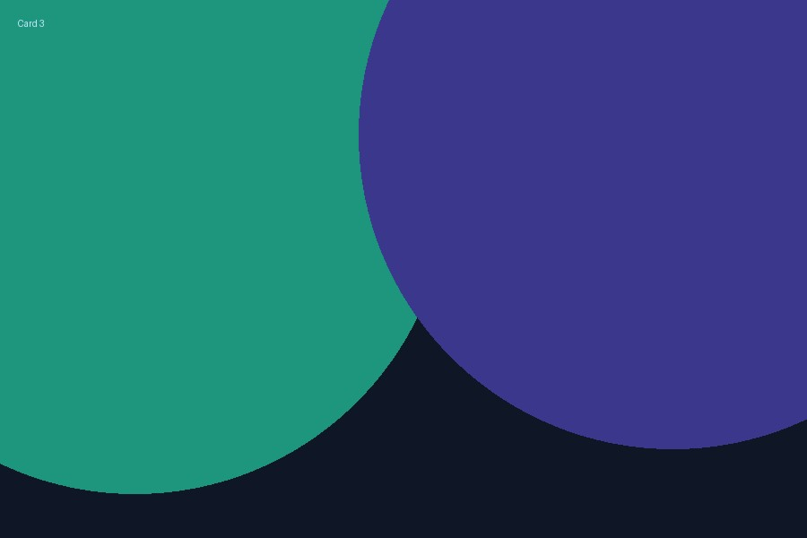

Aha‑Moment
4‑Phasen‑Modell der Entscheidungsfindung
Problem → Alternativen → Auswahl → Umsetzung
Warum cool? Es zwingt mich, Alternativen bewusst zu sammeln – das hebt die Qualität von Diskussionen sofort.
Teile die Studieninhalte, die dich wirklich begeistern – klar, kreativ, teilbar. Dieses Journal ist deine Bühne, um Kommiliton*innen, Kolleg*innen und Freund*innen zu zeigen, was du lernst.
Problem → Alternativen → Auswahl → Umsetzung
Warum cool? Es zwingt mich, Alternativen bewusst zu sammeln – das hebt die Qualität von Diskussionen sofort.

Spezifisch · Messbar · Attraktiv · Realistisch · Terminiert
Mein Takeaway: „Attraktiv“ motiviert – ohne echte Motivation bleiben Ziele Theorie.

Die Kosten der verpassten Alternative – Zeit, Fokus, Optionen.
Beispiel: Wenn ich 2 Stunden lerne, investiere ich Zeit und verzichte auf anderes – diese „Kosten“ möchte ich bewusst einkalkulieren.
Dieses Beispiel zeigt, wie du eine öffentliche Mini‑Webseite aufbauen kannst, um Studieninhalte für andere sichtbar zu machen. Der Titel ist frei wählbar – das Branding lautet hier Cool Content Journal (CCJ).
Urheberrecht beachten: Keine Kopien aus Skripten/Folien; formuliere in deinen eigenen Worten und nutze selbst erstellte Grafiken oder frei lizenzierte Medien mit korrekter Quelle.